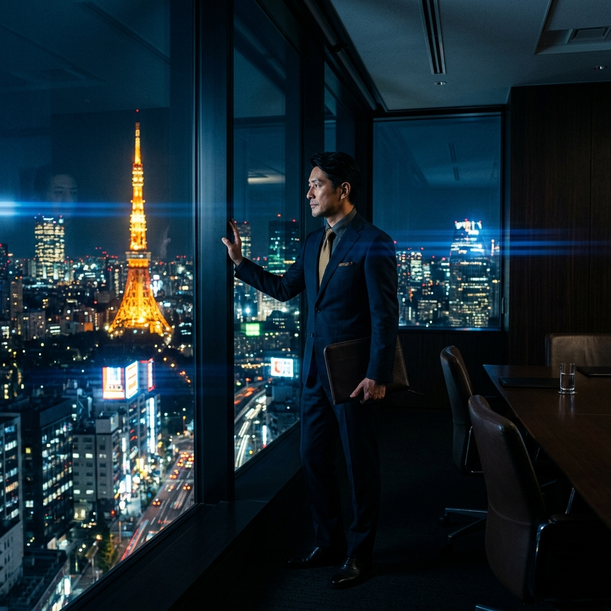

正解のない時代を率いるトップマネジメント層へ。
経営者特有のメンタルブロックを解除し、組織を飛躍させる次世代エグゼクティブ・コーチング。
事業規模が拡大し、社員数が増えるほどトップダウンの指示系統は機能不全を起こします。経営者自身が「これまでの成功体験」という殻を破らなければ、企業の成長曲線は必ず鈍化します。
役職が上がるにつれ、周囲からの率直なフィードバックは激減します。意思決定の精度が狂い始めていることに、自分自身では気づくことができません。圧倒的な「客観の鏡」が必要です。
私たちは、単なるビジネススキルの指導は行いません。リーダー自身の無意識の思考の癖を可視化し、根本的な自己変容（Transformation）を促すことで、組織全体を牽引する新たな器を作り上げます。
経営判断を鈍らせる「無意識のバイアス」を立体的に可視化。独自のサーベイツールを用い、思考の現在地を特定します。
これまでの成功を支えてきた「強み」が、次のステージでは「弱み」となる構造を紐解き、恐れや葛藤（シャドウ）と統合します。
事象を「点」ではなく、関係性の「システム」として捉える俯瞰力を鍛えます。
個人の揺るぎないパーパスと、企業ビジョンを同期させ、真の原動力を解放します。
ICF認定マスターコーチ陣
全コーチが国際コーチング連盟（ICF）の最高峰資格を保有。単なる傾聴ではなく、核心を突く鋭いフィードバックを提供します。
完全な守秘義務空間
経営戦略の相談、ボードメンバーとの軋轢など、社内の誰にも言えない内容も、絶対的な秘密保持のもと安心して吐き出せます。
月2回・6ヶ月の伴走プログラム
一時的なモチベーション向上ではなく、脳の回路が書き換わるまでの最低6ヶ月間、集中的に伴走します。
まずは60分の無料エグゼクティブ・セッションで、
現在の課題の「真因」を発見しませんか。
経営課題をご自身で抱えている方へ。秘密厳守の1on1で、思考の整理をお手伝いします。
人事責任者様へ。次世代リーダー育成に向けた、カリキュラム詳細や料金体系がわかる資料です。